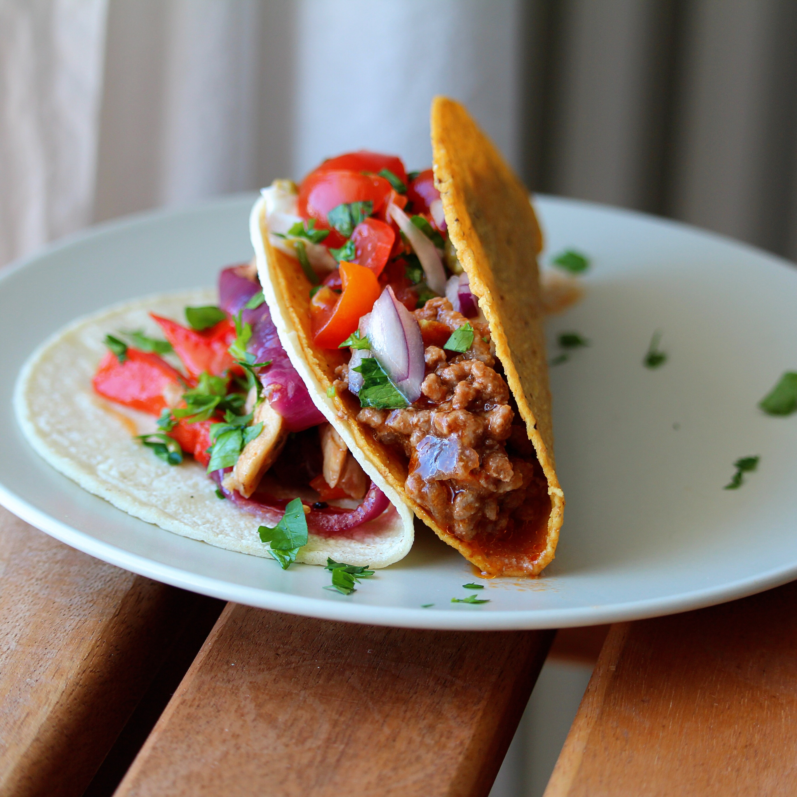

Taco Meat

Description
This recipe makes just the taco meat. You have to buy everything else, of course.
Ingredients
- 1 pound lean ground beef
- ½ teaspoon onion powder
- ½ teaspoon garlic salt
- ½ teaspoon celery salt
- ½ teaspoon ground cumin
- 1 (8 ounce) can tomato sauce, or more to taste
Steps
-
Heat a large skillet over medium-high heat.
Cook and stir beef in the hot skillet until browned and crumbly, 5 to 7 minutes.
-
Season beef with onion powder, garlic salt, celery salt, and cumin.
Pour tomato sauce over the beef, stir to coat, and simmer until thickened, slightly, about 5 minutes.
Go back